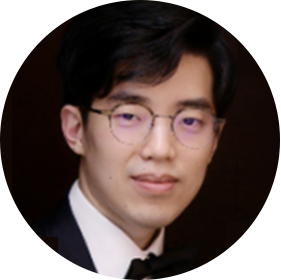

CEO PROFILE
 에디는 2020년에 설립된 AI 기술 기반의 젊고 혁신적인 로보틱스 Start Up 회사입니다.
에디는 2020년에 설립된 AI 기술 기반의 젊고 혁신적인 로보틱스 Start Up 회사입니다.
- 
-
안녕하십니까?
수학, 컴퓨터 및 공학에 대한 열정으로 지난 10년간 끊임없이 연구하고 임베디드 분야의 취업을 준비하는 학생들에게 가르치고 취업을 위한 멘토링을 하며 기업이 원하는 트랜드를 이해하고 그에 맞는 인재양성과 취업을 시켜오며 좋은 성과를 거두었습니다.
이제, 자신있는 신호처리와 레이더를 더 깊게 연구하여 자율주행 통합 솔루션을 만들고자 창업을 하였습니다. 영상인식, 레이더 및 라이더 신호제어, FPGA 를 활용한 대용량 센서 데이터 실시간 프로세싱 및 수학과 C 를 기반으로 한 딥러닝 기술을 바탕으로 현실에서 더욱 풍요로운 기술로 고객여러분을 찾아 뵙겠습니다. 또한, 4차산업에 필요한 원천기술을 끊임없이 연구하고 관련 기술을 전파하며 대한민국 제조 산업에 새로운 돌풍을 일으키겠습니다. 많은 관심과 성원 부탁드립니다.대표이사 이상훈
- 2020년 창조경제혁신센터 주관 사업 최우수 달성

- 에디로봇아카데미 운영
- Binary Translator 컴파일러 개발
- 삼성전자 무선사업부 IoT 교육 외 다수 기업
- 교육 FPGA 기반 초고속 데이터 처리 서버 개발
- 차량용 임베디드 리눅스 시스템 개발
- 차량용 레이다 신호처리 S/W 개발
- DC-DC 컨버터 설계
- FPGA 기반 모터 제어 외주 개발
- TMS570, STM32, NXP 펌웨어 (RTOS포함) 개발
- 임베디드 마스터 과정 및 자율주행 과정 강의 (비트교육센터, 한국아이티기술, 헤스트, 한국산업기술대 외 다수)
- 과학기술정보통신부 혁신성장 인공지능 전문 교육(비트교육센터)
- 웹 애플리케이션 개발 과정 교육(비트교육센터, KH정보교육원)